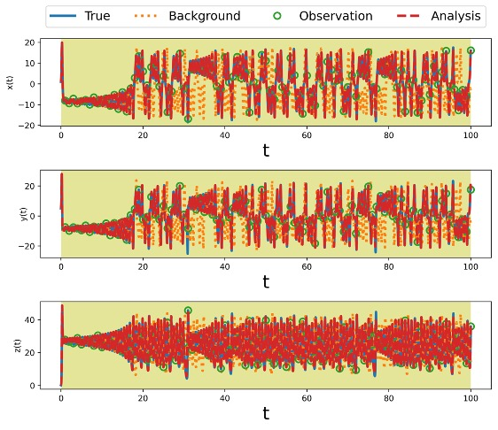
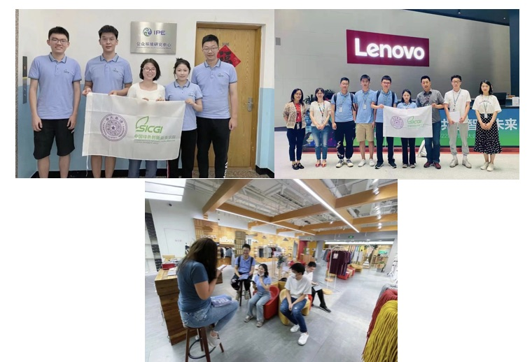
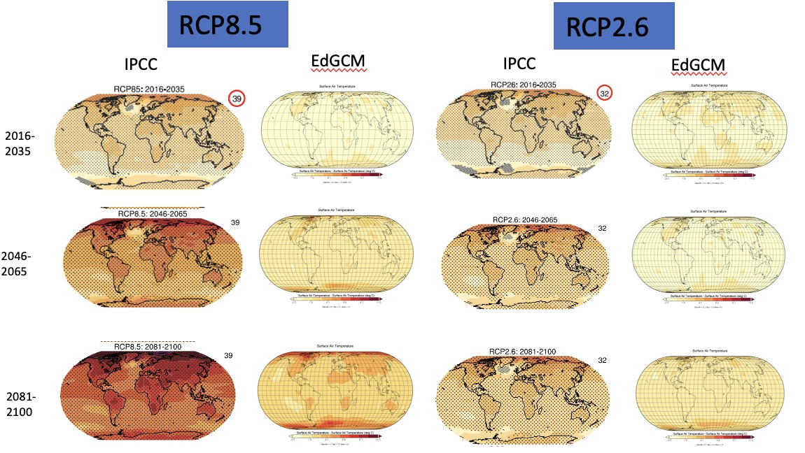

Various Discretisation Schemes of Lorenz Equation in Python
The Lorenz equation composes of three differential equations and a discretisation scheme is needed to implement the model on to a computer. Three discretisation Schemes are Forward Euler method (FE), second order Adams-Bashforth method(AB2), Runge-Kutta Order 4 formula method (RK4).

Data Assimilation in Dynamic model
Observations have uncertainty, and the numerical model has limitations because it has assumptions and errors in it. Therefore, data assimilation is one way to improve the reliability of the predictions of numerical models.

Leading Carbon - Visual Carbon Label
Startup project in Climate Action Recognition Scheme held by Hong Kong SDG Hub. Leading carbon is a Carbon label service provider with the belief that low carbon products will benefit both the interests of consumers and producers.

SICGI held by Tsinghua University and Apple Inc
Being one of 27 selected participants of 2021 Summer Institute for China's Green Innovators (SICGI), my team Leading Carbon won the First Price of The 6th China's Green Innovation Competition

Lifecycle Assessment
LCA project access the environmental impacts brought by the sushi container offered by Sushiro and to provide a following-up recommendation to minimize its impacts.

Global Climate Model
Basic GCM project relates to comparison of climate change simulations from EdGCM and IPCC AR5, analysis of the temperature sensitivity to the solar constant, and analysis of the heat-related mortality risk under different socioeconomic pathways